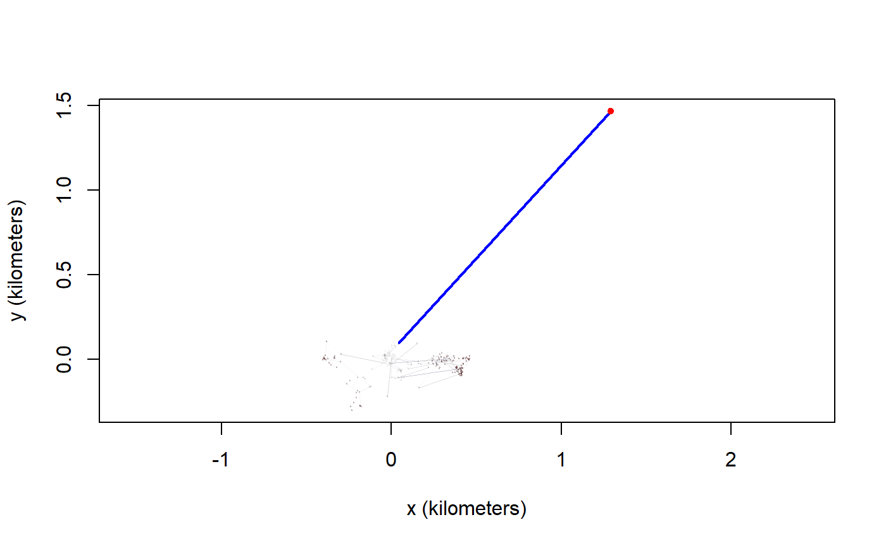
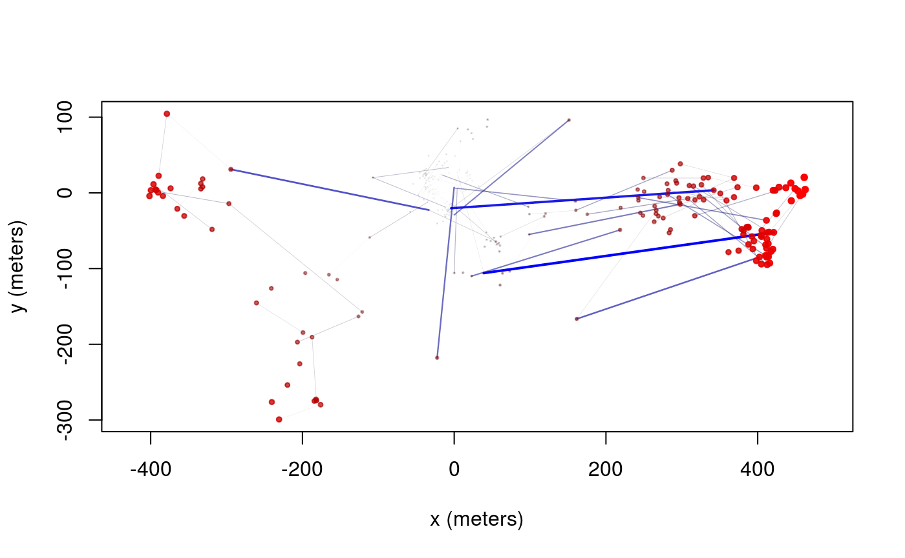
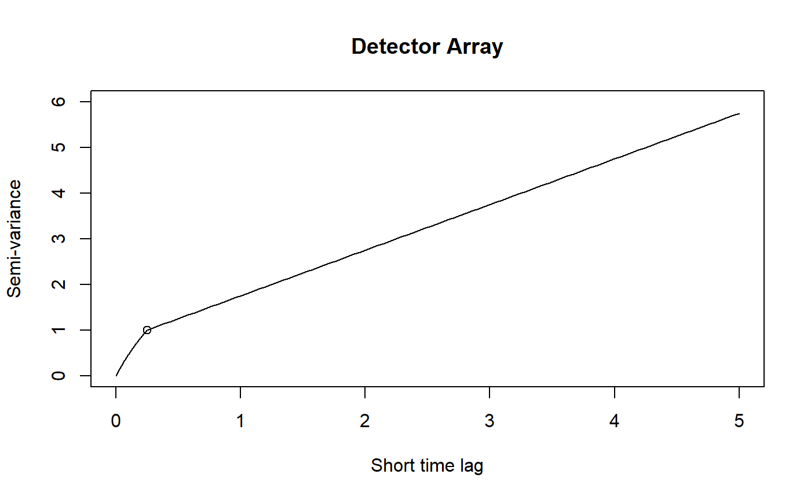
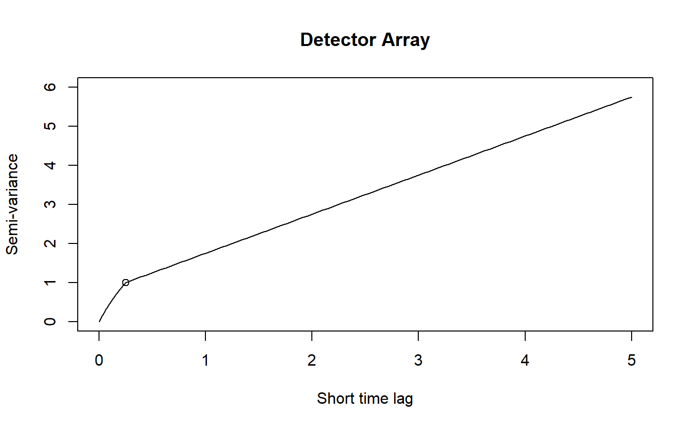

Error calibration
The first step to handling errors is to quantify them. Make sure that your data’s “dilution of precision” (DOP) and error columns import correctly into ctmm. Some tracking device manufacturers provide pre-calibrated errors. This fisher was tracked with an e-obs GPS collar that features calibrated errors for the location, imported by ctmm into the VAR.xy column, which represents the x and y error variances.
## Warning in as.telemetry.data.frame(data, timeformat = timeformat, timezone
## = timezone, : VDOP not found. HDOP used as an approximate VDOP, which will
## require a separate UERE. See help("uere").## Minimum sampling interval of 13.3 minutes in Leroy## [1] "timestamp" "longitude" "latitude" "t" "HDOP"
## [6] "VAR.xy" "z" "VDOP" "speed" "heading"
## [11] "VAR.v" "x" "y" "vx" "vy"
Most GPS devices will only have an HDOP column, which is only proportional to the x and y error standard deviations. The proportionality constant between the HDOP and error standard deviation is known as the user equivalent range error (UERE). The UERE should be estimated from calibration data if not provided by the manufacturer. Without the option of pre-calibrated errors or calibration data, the UERE must be fit simultaneously with the movement model, which is not as reliable. We will cover simultaneous fitting at the end of this vignette.
In the following wood turtle dataset, we have some calibration data and a turtle track. Note that the calibration data must be collected from the same model device as the tracking data.
## [1] "Calibration.1" "Calibration.2" "Turtle"
The uere command is used to estimate the UERE parameter from calibration data. Do not use this command on animal tracking data.
## horizontal
## 10.62878For GPS data, the UERE will typically be 10-15 meters. The UERE can be assigned to a dataset with the uere<- command.

Outlier detection
Now we come to the task of identifying outliers. The outlie function uses error information to estimate straight-line speeds between sampled times and distances from the bulk of the data.

High-speed segments are colored in blue, while distant locations are colored in red. More emphasis is placed on the more extreme locations in the outlie plot. Visually we can see at least one outlier in the wood turtle data. The output of outlie also contains the error-informed speed and distance estimates (in SI units) used to generate the plot.
A sustained speed of 0.1 m/s is not biologically implausible for a wood turtle, but this location is highly suspicious. After removing the outlier, we can check the data again.

Datasets may have multiple outliers. In pathological situations, there may be no clear separation between the normative data and the outliers. This necessitates a better error model, either by improving inadequate (or absent) HDOP estimates or by employing a heavier tailed error distribution (not yet supported).
Variograms and model selection
Variograms
If we were working with ARGOS data or high resolution GPS data on a small animal, then we can get a “nugget” effect in the variogram that looks like an initial discontinuity at short time lags.
 

The height of this initial discontinuity corresponds to the variance of uncorrelated location errors. The second plot is the kind of initial discontinuity one has with detector array data. The end of the (slope) discontinuity is highlighted with a circle. This discontinuity is smooth because the movement and detection are correlated. The height of this initial discontinuity is also (at least roughly) the variance of the location errors.
Model fitting
Because of some convenient mathematical relations, fitting with telemetry errors involves numerically fitting 1-4 more parameters and is, therefore, slower and less reliable at converging on the MLE than fitting without telemetry error. By default, telemetry error is not turned on in ctmm models (error=FALSE). For calibrated errors, we have to set error=TRUE in the model guess to fit with telemetry error accounted for. For uncalibrated errors, we have to provide an initial guess for error, which will be the device’s UERE. error=10 is usually a good guess for GPS data.
Fitting with small errors
When telemetry errors are relatively small compared to the scale of movement over the sampled time intervals, we can first fit a model without error and use this fit as an initial guess for fitting a model with error. Here we demonstrate this method with Leroy the fisher.
# ctmm beta optimizer is more reliable here
# control <- list(method='pNewton',cores=-1) # use all but 1 core
control <- list(method='pNewton',cores=2) # CRAN policy limits us to 2 processes
# default model guess without error
GUESS <- ctmm.guess(fisher,interactive=FALSE)
# first fit without telemetry error
FIT <- ctmm.fit(fisher,GUESS,control=control)
summary(FIT)## $DOF
## mean area
## 15.74707 28.38282
##
## $CI
## low ML high
## area (square kilometers) 32.95717 49.44647 69.22743
## tau position (hours) 10.12899 16.43810 26.67702
## tau velocity (minutes) 10.50829 11.97002 13.63509
## speed (kilometers/day) 29.60930 30.62564 31.64153# second fit based on first, but with telemetry error activated
GUESS <- FIT
GUESS$error <- TRUE
FIT <- ctmm.fit(fisher,GUESS,control=control)
summary(FIT)## $DOF
## mean area
## 16.85741 29.95352
##
## $CI
## low ML high
## area (square kilometers) 32.742347 48.54534 67.41096
## tau position (hours) 9.460985 15.19263 24.39660
## tau velocity (minutes) 12.162119 13.92175 15.93598
## speed (kilometers/day) 28.310037 29.34320 30.37587Fitting with large errors
When telemetry errors are relatively large, we might fit an isotropic (circular) model first and then use that fit to construct an initial guess for an anisotropic (elliptical) model. Here we demonstrate this method with a wood turtle.
# automated guestimates with circular covariance and calibrated errors
GUESS <- ctmm.guess(turtle[[3]],CTMM=ctmm(error=TRUE,isotropic=TRUE),interactive=FALSE)
# first fit circular model
FIT <- ctmm.fit(turtle[[3]],GUESS,control=control)
summary(FIT)## $DOF
## mean area
## 11.02192 21.74994
##
## $CI
## low ML high
## area (hectares) 20.993902 33.599951 49.12255
## tau position (days) 4.020604 7.298981 13.25053
## tau velocity (minutes) 0.000000 33.555659 91.61318
## speed (meters/day) 119.129220 458.152575 813.55090# create elliptical model guess
GUESS <- FIT
GUESS$isotropic <- FALSE
# populate eccentricity and orientation with guesstimates
GUESS <- ctmm.guess(turtle[[3]],CTMM=GUESS,interactive=FALSE)
# second fit elliptical model
FIT <- ctmm.fit(turtle[[3]],GUESS,control=control)
# velocity does not appear supported
summary(FIT)## $DOF
## mean area
## 13.04353 25.20181
##
## $CI
## low ML high
## area (hectares) 12.271792 18.926207 26.99910
## tau position (days) 3.482745 6.068235 10.57312
## tau velocity (minutes) 0.000000 24.038666 90.73084
## speed (meters/day) 22.954454 541.107846 1186.71261# proceed with model selection
FIT <- ctmm.select(turtle[[3]],FIT,control=control)
# velocity was not supported by this data
summary(FIT)## $DOF
## mean area
## 12.59923 24.41652
##
## $CI
## low ML high
## area (hectares) 12.192644 18.949152 27.17140
## tau position (days) 3.693129 6.319045 10.81206Note also that we performed model selection with a fit (which would then be re-fit) as our initial guess, rather than the raw guess output of ctmm.guess or variogram.fit. This helps ensure convergence in the optimizer.
Fitting with unknown errors
Fitting with unknown errors is a method of last resort. Let’s consider the turtle data again, but without calibrated UERE.
The only difference is that you have to provide an initial guess for the UERE. Otherwise, the steps are the same.
# cheat and use previous fit as initial guess
GUESS <- FIT
GUESS$error <- 10 # 10 meter error guess
# fit parameter estimates
FIT <- ctmm.fit(turtle[[3]],GUESS,control=control)
summary(FIT)## $DOF
## mean area
## 13.46152 25.98179
##
## $CI
## low ML high
## area (hectares) 12.604531 19.298796 27.396169
## tau position (days) 3.467312 5.882936 9.981487
## error (meters) 7.804842 9.317617 10.827627